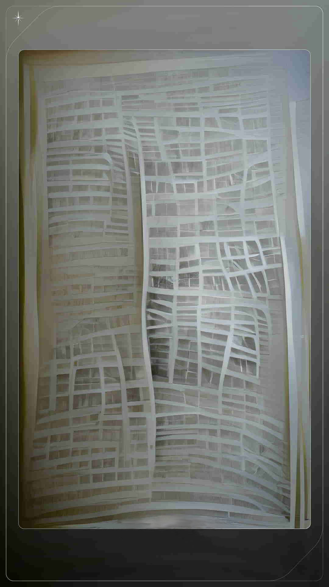

<ion-header>
  <ion-toolbar>
    <ion-buttons slot="start">
      <ion-button (click)="goBack()">
        <ion-icon slot="icon-only" name="arrow-back-outline"></ion-icon>
      </ion-button>
    </ion-buttons>
    <ion-title> Врачебный инструмент </ion-title>
  </ion-toolbar>
</ion-header>

<ion-content>
  <section id="scan" *ngIf="!scanResult">
    <h4>Нажмите для сканирования:</h4>

    <ion-button color="light" class="custom-large" (click)="scanQR()">
      <ion-icon slot="icon-only" name="scan-outline"></ion-icon>
    </ion-button>
  </section>

  <section id="scan-result" *ngIf="scanResult && !successResult">
    <h4>Введите название болезни:</h4>

    <ion-input
      clearInput
      placeholder="Название"
      (ionChange)="disiaseChange()"
      [(ngModel)]="disiaseName">
    </ion-input>

    <section id="buttons">
      <ion-button color="light" (click)="goBack()">отмена</ion-button>
      <ion-button (click)="checkDisiase()" color="light">подтвердить</ion-button>
    </section>

    <section
      id="fail-result"
      *ngIf="disiaseChecked && !successResult">
      <h4>Откройте следующий симптом</h4>
    </section>
  </section>

  <section
    id="success-result"
    *ngIf="disiaseChecked && successResult">
    <span>Нажмите на карту чтобы узнать дополнительную информацию.</span>

    <div class="card" (click)="flipCard($event)">
      <div class="card-front">
        
      </div>
      <div class="card-back">
        
        <div class="result">
          <p>{{realDisiase.description}}</p>
        </div>
      </div>
    </div>
  </section>
</ion-content>
